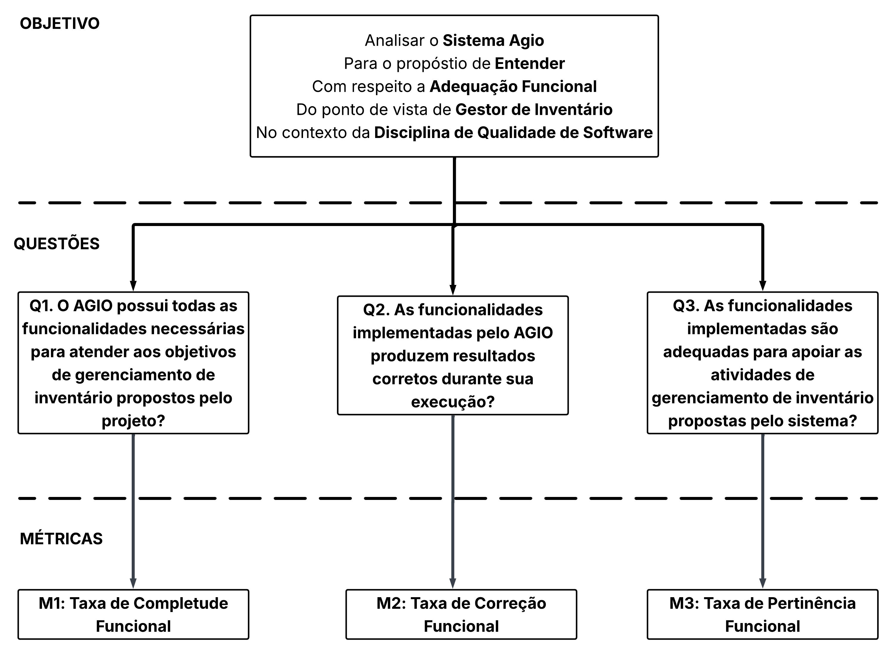

Fase 2 - Adequação Funcional
Introdução
Este artefato tem como objetivo aplicar a abordagem GQM (Goal-Question-Metric) para analisar a Adequação Funcional do sistema AGIO (Aplicação de Gestão de Inventário Otimizada). A proposta consiste em definir objetivos, perguntas e métricas que permitam avaliar se as funcionalidades disponibilizadas pelo sistema atendem adequadamente às necessidades dos usuários e aos objetivos de gerenciamento de inventário definidos pelo projeto.
A análise foi baseada nas subcaracterísticas de Adequação Funcional definidas pela norma ISO/IEC 25010: Completude Funcional, Correção Funcional e Pertinência Funcional.
Metodologia
Para realizar esta avaliação, foi utilizada a abordagem GQM (Goal-Question-Metric), uma metodologia que segue uma estratégia top-down (de cima para baixo), na qual, primeiramente, é definido um objetivo de medição. Em seguida, são elaboradas perguntas relacionadas aos aspectos que se deseja avaliar e, por fim, são estabelecidas métricas capazes de fornecer dados para responder a essas perguntas e verificar se as hipóteses definidas são válidas.
A aplicação do método GQM permite transformar os conceitos da característica de Adequação Funcional em indicadores mensuráveis, possibilitando uma avaliação objetiva das funcionalidades implementadas no AGIO.
Descrição do Objetivo de Medição de Adequação Funcional
Tabela 1: Descrição do Objetivo de Medição de Qualidade
| Dimensão | Descrição |
|---|---|
| Analisar | Sistema AGIO |
| Para o propósito de | Entender |
| Com respeito | Adequação Funcional |
| Da perspectiva do | Gestor de Inventário |
| No contexto de | Disciplina de Qualidade de Software |
Autor: Letícia Monteiro
Questões e Métricas
Com base nas subcaracterísticas de Adequação Funcional definidas pela ISO/IEC 25010, foram definidas três perguntas para orientar a avaliação.
Q1. O AGIO possui todas as funcionalidades necessárias para atender aos objetivos de gerenciamento de inventário propostos pelo projeto?
Hipótese (H1): Espera-se que as funcionalidades previstas na documentação do sistema estejam implementadas e disponíveis para utilização pelos usuários.
Esta hipótese será testada utilizando a seguinte métrica.
Métrica 1.1: Taxa de Completude Funcional
Fórmula
- Taxa de Completude = (N° de funcionalidades implementadas / N° total de funcionalidades especificadas) x 100
Funcionalidades Consideradas
- Criação de usuários;
- Login e logout;
- Controle de acesso;
- Cadastro de itens;
- Edição de itens;
- Remoção de itens;
- Visualização do inventário;
- Exportação de dados em CSV.
Interpretação
- Alta Completude Funcional (H1 Confirmada em nível de completude alta): > 90%
- Média Completude Funcional (H1 Confirmada em nível de completude média): 70% – 90%
- Baixa Completude Funcional (H1 Refutada): < 70%
Q2. As funcionalidades implementadas pelo AGIO produzem resultados corretos durante sua execução?
Hipótese (H2): Espera-se que as funcionalidades implementadas executem corretamente suas operações e apresentem resultados compatíveis com os requisitos definidos para o sistema.
Esta hipótese será testada utilizando a seguinte métrica.
Métrica 2.1: Taxa de Correção Funcional
Fórmula
- Taxa de Correção = (N° de funcionalidades executadas corretamente / N° total de funcionalidades verificadas) x 100
Funcionalidades Consideradas
- Login e logout;
- Cadastro de itens;
- Edição de itens;
- Remoção de itens;
- Consulta de inventário;
- Exportação CSV.
Interpretação
- Alta Correção Funcional (H2 Confirmada em nível de correção alta): > 95%
- Média Correção Funcional (H2 Confirmada em nível de correção média): 80% – 95%
- Baixa Correção Funcional (H2 Refutada): < 80%
Q3. As funcionalidades implementadas são adequadas para apoiar as atividades de gerenciamento de inventário propostas pelo sistema?
Hipótese (H3): Espera-se que as funcionalidades disponibilizadas contribuam diretamente para a realização das atividades de gerenciamento de inventário previstas no escopo do AGIO.
Esta hipótese será testada utilizando a seguinte métrica.
Métrica 3.1: Taxa de Pertinência Funcional
Fórmula
- Taxa de Pertinência = (N° de funcionalidades consideradas pertinentes / N° total de funcionalidades avaliadas) x 100
Funcionalidades Consideradas
- Funcionalidades de autenticação e controle de acesso;
- Funcionalidades de gerenciamento de inventário;
- Funcionalidades de consulta e visualização de dados;
- Funcionalidades de exportação de informações.
Interpretação
- Alta Pertinência Funcional (H3 Confirmada em nível de pertinência alta): > 90%
- Média Pertinência Funcional (H3 Confirmada em nível de pertinência média): 70% – 90%
- Baixa Pertinência Funcional (H3 Refutada): < 70%
Modelo GQM
Imagem 1: Modelo GQM de Adequação Funcional

Autores: Letícia da Silva, Vitor Pereira e Yzabella Miranda
Conclusão
A utilização do método GQM permitiu transformar o conceito abstrato de Adequação Funcional em um plano de avaliação objetivo para o AGIO. Considerando as funcionalidades descritas na documentação do projeto e os requisitos relacionados ao gerenciamento de inventário, foram selecionadas as subcaracterísticas Completude Funcional, Correção Funcional e Pertinência Funcional, por representarem os principais aspectos da característica segundo a ISO/IEC 25010.
As métricas definidas possibilitam avaliar quantitativamente se as funcionalidades previstas foram implementadas, se operam corretamente e se são adequadas aos objetivos do sistema. Dessa forma, será possível verificar o nível de aderência do AGIO aos requisitos funcionais definidos para o projeto.
Os resultados obtidos a partir dessas métricas poderão indicar o grau de adequação funcional do sistema e servir como base para as próximas etapas da avaliação de qualidade.
Referências Bibliográficas
ISO/IEC. ISO/IEC 25010:2011 – Systems and software engineering — Systems and software Quality Requirements and Evaluation (SQuaRE) — System and software quality models. Geneva: International Organization for Standardization, 2011.
PRESSMAN, Roger S.; MAXIM, Bruce R. Engenharia de Software: uma abordagem profissional. 9. ed. Porto Alegre: AMGH, 2021.
SOMMERVILLE, Ian. Engenharia de Software. 10. ed. São Paulo: Pearson, 2019.
BASILI, Victor R.; CALDIERA, Gianluigi; ROMBACH, H. Dieter. The Goal Question Metric Approach. Encyclopedia of Software Engineering. New York: Wiley, 1994.
Histórico de Versão
| ID | Descrição | Autor | Data | Revisor | Data |
|---|---|---|---|---|---|
| 01 | Criação do documento | Tiago Lemes | 02/06/2026 | João Igor | 12/06/2026 |
| 02 | Documentação | Letícia Monteiro | 08/06/2026 | João Igor | 12/06/2026 |